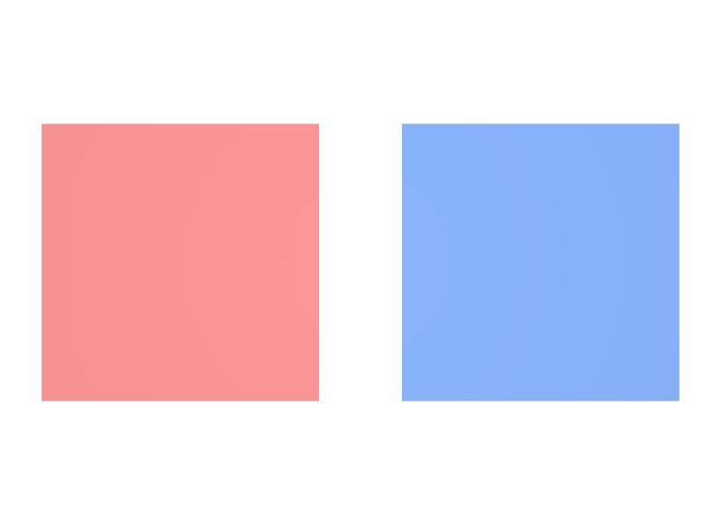

vertexやfaceVaryingも継承されると考える
受け継がれるのはconstantだけです。Topologyに依存する値は、対象のGprimへ直接書きます。
STEP 38 · PRIMVAR INTERPOLATION
親に一度書いた値が、子のGprimへ降りていきます
今日これだけ
公式情報に基づく説明
Primvarは、多くのAttributeと違って、Scene Namespaceを下りながら子のImageable Primへ暗黙に適用されます。子が同じ名前のPrimvarを自分で持っていれば、そちらが優先されます。ただし、こうして受け継がれるのはinterpolationがconstantのPrimvarだけです。
USDA
#usda 1.0
(
defaultPrim = "World"
metersPerUnit = 1
upAxis = "Y"
)
def Xform "World"
{
color3f[] primvars:displayColor = [(0.85, 0.2, 0.2)] (
interpolation = "constant"
)
def Mesh "Inherits"
{
uniform token subdivisionScheme = "none"
int[] faceVertexCounts = [4]
int[] faceVertexIndices = [0, 1, 2, 3]
point3f[] points = [(0, 0, 0), (1, 0, 0), (1, 1, 0), (0, 1, 0)]
}
def Mesh "OwnColor"
{
uniform token subdivisionScheme = "none"
int[] faceVertexCounts = [4]
int[] faceVertexIndices = [0, 1, 2, 3]
point3f[] points = [(0, 0, 0), (1, 0, 0), (1, 1, 0), (0, 1, 0)]
color3f[] primvars:displayColor = [(0.15, 0.35, 0.85)] (
interpolation = "constant"
)
double3 xformOp:translate = (1.3, 0, 0)
uniform token[] xformOpOrder = ["xformOp:translate"]
}
}Inheritsには色が書かれていませんが、親のWorldが持つ赤を受け取ります。OwnColorは自分で青を書いているので、そちらが勝ちます。WorldはXformであってGprimではありませんが、Primvarを書くことはできます。書いた値は自分自身の描画には使われず、子へ渡すためにあります。
結果

Inheritsにはprimvars:displayColorが一行も書かれていませんが、親から受け継いだ赤で描画されます。右のOwnColorは自分の青で上書きしています。examples/lesson-24g/inheritance.usda / Apple USD Tools 0.25.2 のusdrecord（Hydra Storm・Metal）/ macOS 26.5.2・Apple M4Diagram
Python
from pxr import Gf, Sdf, Usd, UsdGeom
stage = Usd.Stage.CreateNew("inheritance.usda")
world = UsdGeom.Xform.Define(stage, "/World")
UsdGeom.PrimvarsAPI(world).CreatePrimvar(
"displayColor", Sdf.ValueTypeNames.Color3fArray,
UsdGeom.Tokens.constant).Set([Gf.Vec3f(0.85, 0.2, 0.2)])
child = UsdGeom.Mesh.Define(stage, "/World/Inherits")
api = UsdGeom.PrimvarsAPI(child)
print(api.GetAuthoredPrimvars())
# [] … この子自身は何も記述していない
found = api.FindPrimvarWithInheritance("displayColor")
print(found.GetAttr().GetPath())
# /World.primvars:displayColor … 親のPrimvarが見つかる
print(found.Get())
# [(0.85, 0.2, 0.2)]
stage.Save()FindPrimvarWithInheritanceは、自分に無ければ親をさかのぼって探します。返ってきたPrimvarのGetAttr().GetPath()を見ると、どのPrimから受け取ったのかが分かります。親の側でFindInheritablePrimvars()を呼ぶと、子へ渡せるPrimvarの一覧を確認できます。
USDA → Python mapping
USDA
親のXformにprimvars:displayColorを記述↓Python
PrimvarsAPI(world).CreatePrimvar(...).Set(...)USDA
子は記述なしで親の値を使う↓Python
api.FindPrimvarWithInheritance("displayColor")Beginner notes
よくある間違い
受け継がれるのはconstantだけです。Topologyに依存する値は、対象のGprimへ直接書きます。
HasPrimvarはSchemaに用意されているだけでもTrueを返します。継承まで含めて調べるならHasPossiblyInheritedPrimvar、値の出どころまで知りたいならFindPrimvarWithInheritanceを使います。
Xformは形を持たないので、そこに書いた色が親自身の見た目になることはありません。値は子のGprimへ届いて初めて効果が出ます。
Glossary
constantのPrimvarがScene Namespaceを下って子のImageable Primへ適用される仕組み。Official references
確認日: